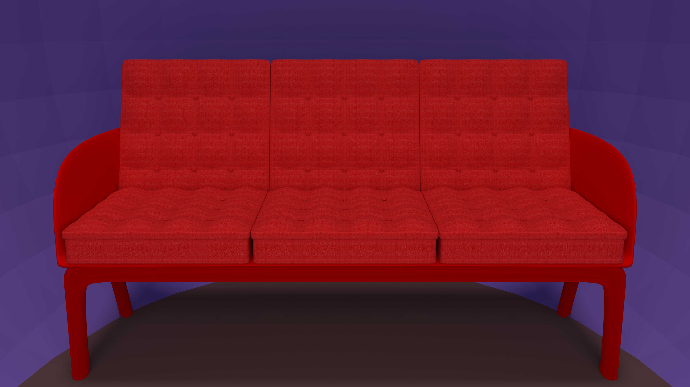
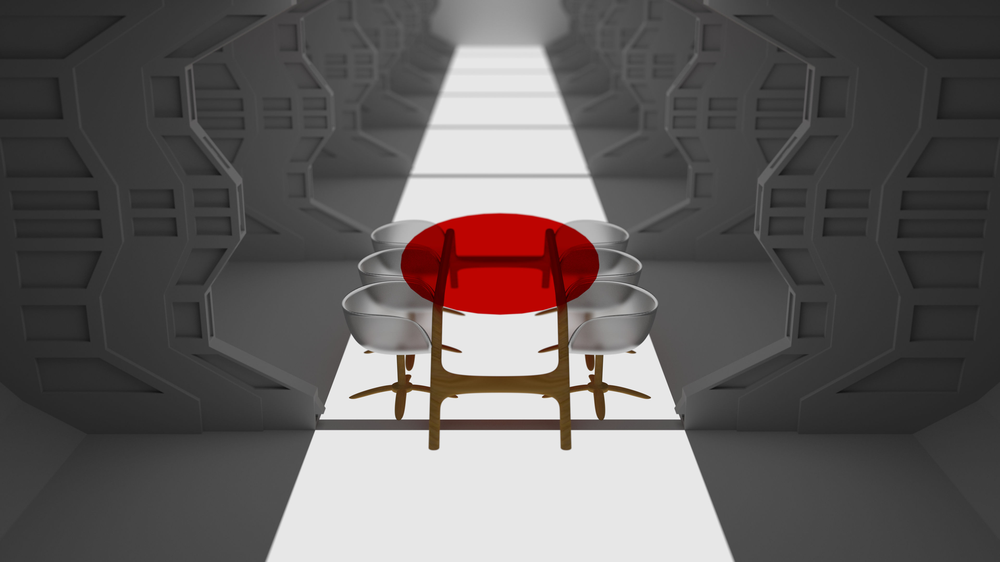

 
.Render1
The computer.
I made this retro computer render in the cycles render engine within blender. I spent a weekend making this and utilized uv unwrapping, Node Based materials, Keylighting, and Modeling using loop cuts and subdivision modifiers.